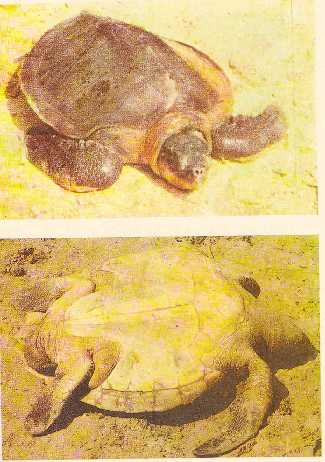

|
Digitized
Inventory of Animal Resources: Reptilia |
Lepidochelys olivacea ( Fitzinger 1843)
Taxonomic Details
----- Scientific Name
----- Classification
----- Synonyms
-----
Common Names
Other Biological Details
----- Habit and Habitat
----- Distribution
---------- Extent of Occurrence
---------- Area of occurrence
---------- Altitude
---------- Population
-----
Conservation Status
----- Diagnostic Features
----- Breeding system
Miscellaneous Information
Literature
Scientific Name : Lepidochelys
olivacea
( Fitzinger 1843)
Family :
Classification:
Order: Testudinidae
Suborder : Cryptodira
Family : Chelonidae Gray, 1825
Genus :
Lepidochelys
Fitzinger 1843
Synonyms:
1829.Lepidochelys olivacea Eschscholtz, Zool. Atlas, 1 : 3
Common Names: Olive
Ridley Turtle
Preparation of turtle leather, flipper skin for luxury goods. Egg and meat forms the main use for its depletion. Eggs are of great delicacy. Yields 25% of its body in the form of meat. Provides high quality residual protein and residual fertilizer.
Habit and Habitat : Mainly a migratory species, covers long distances for feeding and breeding, forages at great depth up to 150 meters in tropical neritic water. Frequents shallow coastal water with rocky embankments and coral reefs, also visits shallow vegetated lagoons and bays. Females frequents sandy beaches for nesting during night. Adults omnivorous, feeding on any invertebrates or vertebrates, vegetation, sea weeds etc.
Distribution: Circum global species, distributed in tropical and subtropical beaches of Pacific, Atlantic and Indian Ocean. Nesting in sandy beaches in Madagascar, Mozambique, Malaysia., Australia, Myanmar, Thailand, Bahama Islands, Costa Rica, Ethiopia, Mexico, Phillipines, Coast of South Africa, Oman, Sri Lanka, Pakistan, Throughout Indian coast including Gulf of Katchchh, Gulf of Mannar, Andaman & Nicobar and Laksadweep Islands. Major concentration for nesting takes place in Gariamatha in Orissa, Middle Andaman, Rutland Island, Nicobar Islands, Goa, Kerala, Lakshadweep, Andhra Pradesh,
Extend of
Occurrence :
Circum
global species, distributed in
tropical and subtropical beaches of Pacific, Atlantic and Indian Ocean. Nesting in sandy beaches
in Madagascar,
Mozambique, Malaysia.,
Australia, Myanmar, Thailand,
Bahama Islands, Costa Rica,
Ethiopia, Mexico, Phillipines, Coast
of South Africa, Oman, Sri Lanka, Pakistan, Throughout Indian coast
Area of occurrence: Throughout Indian coast including Gulf of Katchchh, Gulf of Mannar, Andaman & Nicobar and Laksadweep Islands. Major concentration for nesting takes place in Gariamatha in Orissa, Middle Andaman, Rutland Island, Nicobar Islands, Goa, Kerala, Lakshadweep, Andhra Pradesh,
Altitude:
Does not arise
Population:
Global number not available
Conservation
status:
Included
in Appendix – I
of CITES, however, several
countries such as France, Japan are not governed by the convention laid down by
CITES. Schedule – I of the WLP, 1972.
Size : Small, broad, flattened marine turtle, reaches 60-75 cm in length, fully grown adult female weighs 40 – 55 kg. Largest recorded 80 kg.
Body : Head large and triangular in shape and the individual bones do not become completely fused until late in life. Orbits are distinctly large. Head covered with symmetrical shields, two pairs of prefrontal s present Three dorsal keels present in juveniles will become inconspicuous in the adult.
Flipper/ Limbs : Single claw present in each flipper.
Tail : Tail is quite short
Carapace : Arched devoid of keels, margin slightly serrated on the posterior. Costal scutes are generally 6 or 7 ( 5 – 9), Neural or Central scutes – 8 - 9, Marginal shields 27-29 including the narrow pre central and post central,
Colouration :
Dorsal colouration is Gray or Olive Green, carapace is generally olive gray, top of the head is grey-brown, shields yellow – white, plastron creamy yellow and the edges of the flippers light yellow brown.Breeding system:
Nesting usually during night/early morning during February - March, synchronized aggregations commonly known as Arribada noticed involving 100,000 females during February – March in Orissa, India. Similar condition is recorded at Costa Rica during September – March, Clutch size varies, 74 –126 in Costa Rica, 90 – 140 in India and Sri Lanka, laid in deep sand pits . Re nesting interval is 15 – 19 days. Incubation – 49 – 62 days, strongly correlated with the temperature. Remigration takes place after one to two years. Common to see the same turtle nesting at the same site and hence reproductive activity monitored
Threat : Loss of nesting habitat due to urbanization of coastal areas and conversion of sandy beaches for fish landing sites. Depleted due to the extraction of turtle skin. Incidental catch by shrimp trawler due to lack of turtle extraction device. Egg lifting by Dogs, fox and other animals are the main threat in sea beaches.
